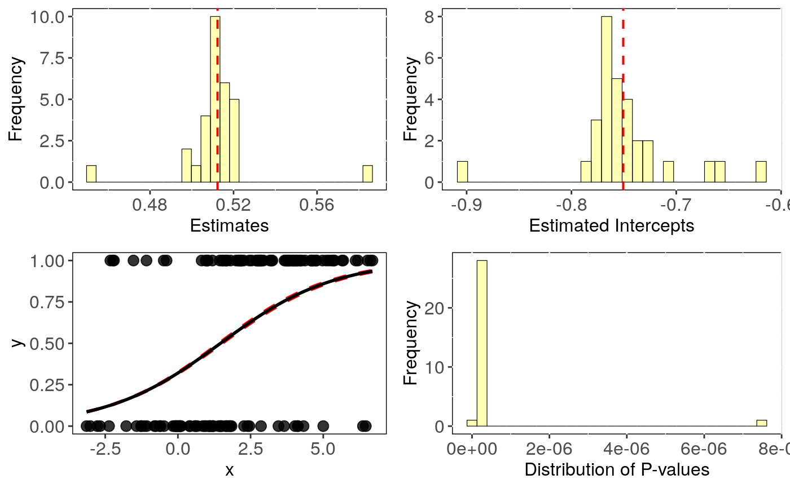

Performs Phylogenetic logistic regression evaluating uncertainty in trees topology.
tree_phyglm(formula, data, phy, n.tree = 2, btol = 50, track = TRUE, ...)
| formula | The model formula |
|---|---|
| data | Data frame containing species traits with species as row names. |
| phy | A phylogeny (class 'multiPhylo', see ? |
| n.tree | Number of times to repeat the analysis with n different trees picked
randomly in the multiPhylo file.
If NULL, |
| btol | Bound on searching space. For details see |
| track | Print a report tracking function progress (default = TRUE) |
| ... | Further arguments to be passed to |
The function tree_phyglm returns a list with the following
components:
formula: The formula
data: Original full dataset
sensi.estimates: Coefficients, aic and the optimised
value of the phylogenetic parameter (e.g. lambda) for each regression with a
different phylogenetic tree.
N.obs: Size of the dataset after matching it with tree tips and removing NA's.
stats: Main statistics for model parameters.CI_low and CI_high are the lower
and upper limits of the 95
all.stats: Complete statistics for model parameters. sd_intra is the standard deviation
due to intraspecific variation. CI_low and CI_high are the lower and upper limits
of the 95
This function fits a phylogenetic logistic regression model using phyloglm
to n trees, randomly picked in a multiPhylo file.
Currently, this function can only implement simple logistic models (i.e. \(trait~ predictor\)). In the future we will implement more complex models.
Output can be visualised using sensi_plot.
Paterno, G. B., Penone, C. Werner, G. D. A. sensiPhy: An r-package for sensitivity analysis in phylogenetic comparative methods. Methods in Ecology and Evolution 2018, 9(6):1461-1467
Donoghue, M.J. & Ackerly, D.D. (1996). Phylogenetic Uncertainties and Sensitivity Analyses in Comparative Biology. Philosophical Transactions: Biological Sciences, pp. 1241-1249.
Ho, L. S. T. and Ane, C. 2014. "A linear-time algorithm for Gaussian and non-Gaussian trait evolution models". Systematic Biology 63(3):397-408.
### Simulating Data: set.seed(6987) mphy = rmtree(150, N = 30) x = rTrait(n=1,phy=mphy[[1]]) X = cbind(rep(1,150),x) y = rbinTrait(n=1,phy=mphy[[1]], beta=c(-1,0.5), alpha=.7 ,X=X) dat = data.frame(y, x) # Run sensitivity analysis: tree <- tree_phyglm(y ~ x, data = dat, phy = mphy, n.tree = 30)#>#> | | | 0% | |== | 3% | |===== | 7% | |======= | 10% | |========= | 13% | |============ | 17% | |============== | 20% | |================ | 23% | |=================== | 27%#> Warning: the estimate of 'alpha' (11.6425525235857) reached the upper bound (11.8158414904195). #> This may simply reflect a flat likelihood at large alpha values, #> meaning that the phylogenetic correlation is estimated to be negligible.#> | |===================== | 30% | |======================= | 33% | |========================== | 37% | |============================ | 40% | |============================== | 43%#> Warning: the estimate of 'alpha' (12.7415645877661) reached the upper bound (12.899600755638). #> This may simply reflect a flat likelihood at large alpha values, #> meaning that the phylogenetic correlation is estimated to be negligible.#> | |================================= | 47% | |=================================== | 50% | |===================================== | 53% | |======================================== | 57% | |========================================== | 60% | |============================================ | 63% | |=============================================== | 67% | |================================================= | 70% | |=================================================== | 73%#> Warning: the estimate of 'alpha' (10.3738877786302) reached the upper bound (10.3797138978692). #> This may simply reflect a flat likelihood at large alpha values, #> meaning that the phylogenetic correlation is estimated to be negligible.#> | |====================================================== | 77% | |======================================================== | 80% | |========================================================== | 83% | |============================================================= | 87% | |=============================================================== | 90%#> Warning: the estimate of 'alpha' (11.9492566117248) reached the upper bound (12.101503272683). #> This may simply reflect a flat likelihood at large alpha values, #> meaning that the phylogenetic correlation is estimated to be negligible.#> | |================================================================= | 93% | |==================================================================== | 97% | |======================================================================| 100%#> mean CI_low CI_high #> intercept -0.751 -0.768 -0.733 #> se.intercept 0.269 0.267 0.272 #> pval.intercept 0.006 0.004 0.009 #> estimate 0.512 0.505 0.519 #> se.estimate 0.098 0.098 0.099 #> pval.estimate 0.000 0.000 0.000